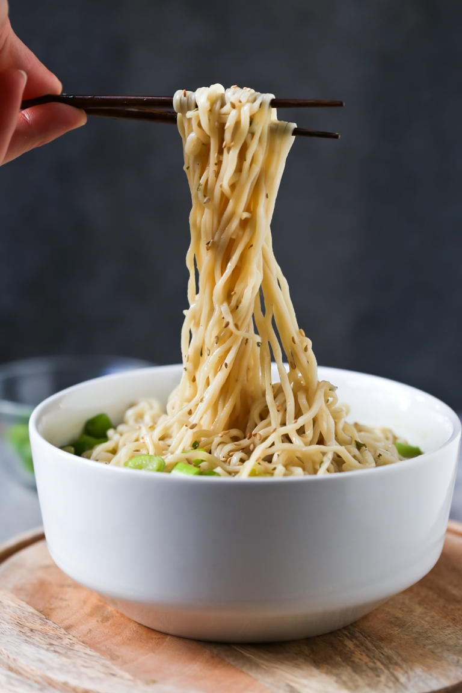

Regular Ramen
Home |
Corn Beef |
Hot Dog

Description
Ramen is a staple food. When you're too lazy to add the bells and whistles, this is the perfect recipe for some ramen that will fill you up without overwhelming your taste buds. Simple and perfect!
Ingredients
- 1 Maruchan Chicken Ramen Packet
- 3 cups Water
- 1 tbsp Jamaican Grace Hot Sauce
Steps
- Add water and the noodles from the Maruchan packet into a pot and boil on medium-high heat until noodles are firm, but a little springy.
- Drain most of the water, leaving only enough to just cover the noodles in the pot.
- Add the whole ramen seasoning packet into the pot and turn heat to low.
- Stir until the seasoning is dissolved and then let boil until noodles are less firm and at desired bounciness.
- Turn off heat and serve. Can be served with broth or drained.
- Top with hot sauce to taste and eat.